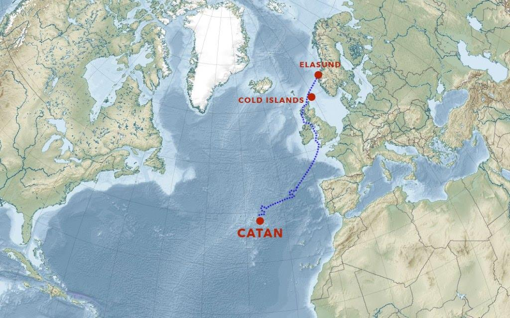

Visit Us
The island's landscape is a sublime mixture of lava rock and exotic vegetation in an ever changing scenery that envelopes this scarcely populated island. Catan features some of the best swimming holes in the Atlantic, and every so often an occasional sand beach appears.
-

Location
Our island was discovered when settlers came from Germany and found Catan in the Atlantic Ocean. Our beautiful island is located southwest of France, take a look at the map provided as a reference.
Our Score
Here is a table showing how we view our island.
| Category | Our Score | Description |
|---|---|---|
| Cost of Living | 0 | Very expensive |
| Crime | 3 | Very Safe |
| Entertainment | 1 | So-so |
| Pollution | 3 | Very Clean |
| Scenery | 3 | Beautiful |
| Taxes | 0 | High |
| Transportation | 0 | Heavy/ No transit |
| Weather | 2 | 4 Seasons |
Travel Award
Having been named the No.1 sustainable tourism destination by Quality Coast, Catan bettered the Gold Award standard it achieved previously, becoming the first destination ever to achieve the Platinum Award standard.
Contact Us
Please Email us at catan.island@catan.org
We will be happy to answer any questions you may have.